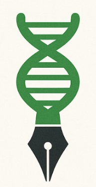
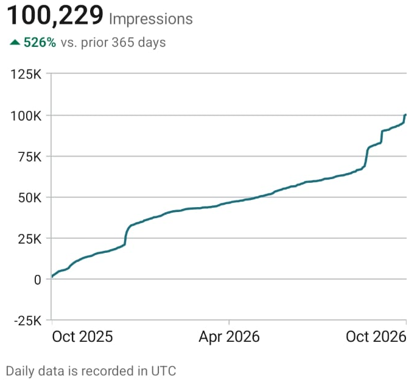
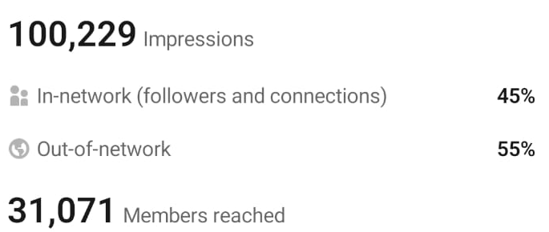
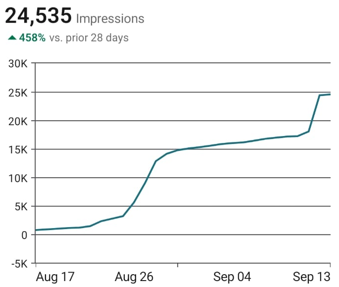
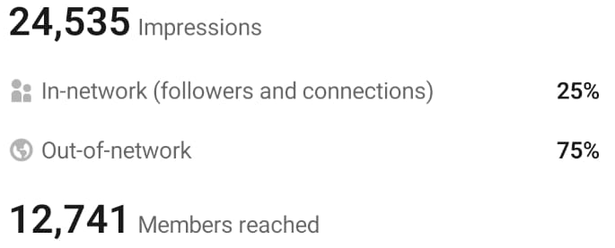
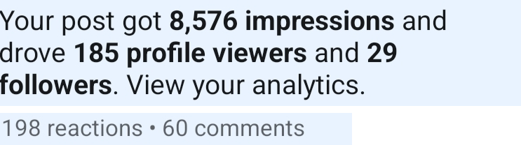
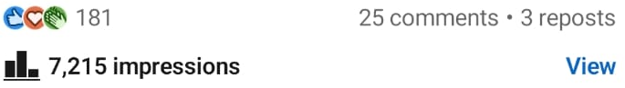
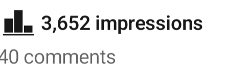
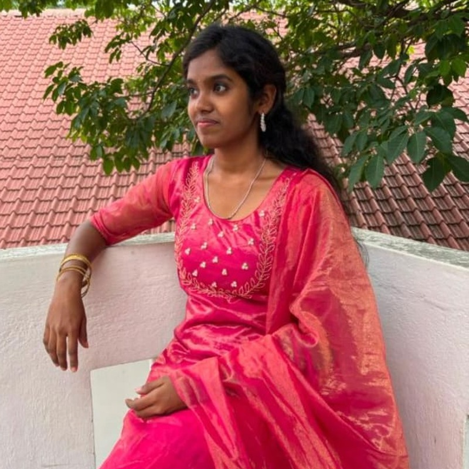

<title>Bioscriptz</title>
<link rel="preconnect" href="https://fonts.googleapis.com">
<link rel="preconnect" href="https://fonts.gstatic.com" crossorigin>
<link rel="stylesheet" href="https://fonts.googleapis.com/css2?family=DM+Sans:wght@400;500;700&family=Source+Serif+4:ital,wght@0,400;0,600;0,700;1,400;1,600&display=swap">
<style>
/* Layout concept: left-aligned editorial page on the logo's cream. One dark green band carries the "why now" argument,
   the roadmap is a line that fills as you scroll, and the proof is laid out like receipts. */
:root{
  --bg:#FCF9F2; --bg2:#F1ECDF; --card:#FFFDF8; --ink:#16251F; --muted:#4A5A52;
  --green:#2E7D43; --on-green:#FCF9F2; --mint:#E3EFE2; --line:rgba(22,37,31,.15);
  --band:#16251F; --on-band:#F3EFE4; --band-muted:#BCCBC1; --band-accent:#86D19A; --band-line:rgba(243,239,228,.2);
  --chip:#FCF9F2; --shot:#FFFFFF; --shadow:rgba(22,37,31,.14);
  --serif:'Source Serif 4',Georgia,'Times New Roman',serif;
  --sans:'DM Sans','Helvetica Neue',Arial,sans-serif;
}
@media (prefers-color-scheme: dark){
  :root:not([data-theme="light"]){
    --bg:#0E1713; --bg2:#14211B; --card:#16241E; --ink:#F1EDE2; --muted:#B4C3B9;
    --green:#86D19A; --on-green:#0E1713; --mint:#1C3025; --line:rgba(241,237,226,.17);
    --band:#08100C; --band-line:rgba(243,239,228,.2); --shadow:rgba(0,0,0,.45);
    color-scheme:dark;
  }
}
:root[data-theme="dark"]{
  --bg:#0E1713; --bg2:#14211B; --card:#16241E; --ink:#F1EDE2; --muted:#B4C3B9;
  --green:#86D19A; --on-green:#0E1713; --mint:#1C3025; --line:rgba(241,237,226,.17);
  --band:#08100C; --band-line:rgba(243,239,228,.2); --shadow:rgba(0,0,0,.45);
  color-scheme:dark;
}

*,*::before,*::after{box-sizing:border-box}
html{scroll-behavior:smooth}
body{margin:0;background:var(--bg);color:var(--ink);font:400 1.0625rem/1.65 var(--sans);-webkit-font-smoothing:antialiased;overflow-x:clip}
img{display:block;max-width:100%}
a{color:inherit}
:focus-visible{outline:3px solid var(--green);outline-offset:3px;border-radius:4px}
.wrap{max-width:1160px;margin-inline:auto;padding-inline:clamp(16px,4vw,40px)}
.sec{padding-block:clamp(64px,9vw,120px);scroll-margin-top:60px}
.alt{background:var(--bg2)}
.band{background:var(--band);color:var(--on-band);--muted:var(--band-muted);--green:var(--band-accent);--line:var(--band-line);--on-green:#0E1713}
.eyebrow{font:700 .8125rem/1.3 var(--sans);letter-spacing:.14em;text-transform:uppercase;color:var(--green);margin:0 0 1rem}
h1,h2,h3{font-family:var(--serif);font-weight:600;letter-spacing:-.015em;text-wrap:balance;margin:0}
h2{font-size:clamp(2rem,4vw,3.1rem);line-height:1.1}
h3{font-size:1.5rem;line-height:1.2}
p{margin:0}
.lead{font-size:1.2rem;color:var(--muted);max-width:56ch;margin-top:1.1rem}
.num{color:var(--green);font-weight:700}

/* buttons */
.btn{display:inline-flex;align-items:center;gap:.5rem;padding:.85rem 1.4rem;border-radius:999px;font:700 1rem/1 var(--sans);text-decoration:none;border:2px solid var(--green);cursor:pointer;transition:transform .15s ease,background .15s ease}
.btn-primary{background:var(--green);color:var(--on-green)}
.btn-ghost{background:transparent;color:var(--green)}
.btn:hover{transform:translateY(-2px)}

/* nav */
.nav{position:sticky;top:env(safe-area-inset-top,0px);z-index:20;background:var(--bg);border-bottom:1px solid var(--line)}
.nav-in{display:flex;align-items:center;justify-content:space-between;gap:1rem;min-height:60px}
.brand{display:flex;align-items:center;gap:.6rem;text-decoration:none}
.chip{width:34px;height:40px;background:var(--chip);border-radius:8px;display:grid;place-items:center;overflow:hidden}
.chip img{height:36px;width:auto}
.wordmark{font:700 1.45rem/1 var(--serif);letter-spacing:-.01em}
.wordmark b{color:var(--green);font-weight:700}
.nav-links{display:flex;gap:1.6rem;align-items:center}
.nav-links a{font-weight:500;font-size:.95rem;text-decoration:none;color:var(--muted)}
.nav-links a:hover{color:var(--ink)}
.nav .btn{padding:.6rem 1.1rem;font-size:.9rem}
.nav-links a.btn,.nav-links a.btn:hover{color:var(--on-green)}
@media (max-width:900px){.nav-links a:not(.btn){display:none}}

/* hero */
.hero{display:grid;grid-template-columns:minmax(0,1.15fr) minmax(0,.85fr);gap:clamp(32px,5vw,72px);align-items:center;padding-block:clamp(40px,6vw,88px) clamp(40px,5vw,72px)}
.hero h1{font-size:clamp(2.3rem,4.6vw,3.9rem);line-height:1.04;margin-bottom:1.4rem}
.hero h1 em{color:var(--green);font-style:italic}
.hero .lead{margin-top:0;margin-bottom:2rem}
.cta-row{display:flex;flex-wrap:wrap;gap:.8rem}
.portrait{position:relative;width:min(100%,420px);aspect-ratio:1;margin-inline:auto;overflow:hidden;overflow:clip}
.portrait .blob{position:absolute;inset:12% 0 0 12%;border-radius:50%;background:var(--mint)}
.portrait .ring{position:absolute;inset:0;width:100%;height:100%;animation:spin 48s linear infinite;overflow:visible}
.portrait .ring text{font:700 17px var(--sans);fill:var(--green);letter-spacing:.1em}
.portrait img.me{position:absolute;inset:11%;width:78%;height:78%;border-radius:50%;object-fit:cover;object-position:50% 38%;border:6px solid var(--bg);box-shadow:0 0 0 3px var(--green)}
@keyframes spin{to{transform:rotate(360deg)}}
@media (max-width:860px){.hero{grid-template-columns:minmax(0,1fr)}.portrait{width:min(100%,340px)}}

/* stats */
.stats{display:grid;grid-template-columns:repeat(4,minmax(0,1fr));border-block:1px solid var(--line)}
.stat{padding:1.6rem 1.2rem}
.stat+.stat{border-left:1px solid var(--line)}
.stat b{display:block;font:600 clamp(2rem,4vw,3.2rem)/1.05 var(--serif);font-variant-numeric:tabular-nums;letter-spacing:-.02em}
.stat span{display:block;margin-top:.45rem;font-size:.92rem;color:var(--muted);line-height:1.4}
.stats-note{margin-top:.9rem;font-size:.9rem;color:var(--muted)}
@media (max-width:700px){.stats{grid-template-columns:repeat(2,minmax(0,1fr))}.stat:nth-child(3){border-left:0}.stat:nth-child(n+3){border-top:1px solid var(--line)}}

/* why now */
.why{display:grid;grid-template-columns:minmax(0,.9fr) minmax(0,1.1fr);gap:clamp(32px,5vw,72px);align-items:start}
.why .talk{display:flex;flex-direction:column;gap:1.1rem;margin-top:1.5rem;color:var(--muted);font-size:1.12rem}
.why .talk strong{color:var(--on-band);font-weight:500}
.field{display:flex;flex-direction:column;gap:2rem}
.field-block .cap{display:flex;flex-wrap:wrap;align-items:baseline;gap:.3rem .9rem;margin-bottom:.8rem}
.field-block .cap b{font:600 clamp(1.5rem,2.6vw,2.1rem)/1.1 var(--serif);color:var(--on-band)}
.field-block .cap span{color:var(--muted);font-size:.95rem}
.dots{display:flex;flex-wrap:wrap;gap:4px}
.dot{width:8px;height:8px;border-radius:50%;animation:pop .35s ease-out both}
.dots-a .dot{background:var(--muted)}
.dots-b .dot{background:var(--green)}
@keyframes pop{from{opacity:0;transform:scale(.3)}to{opacity:1;transform:scale(1)}}
.legend{font-size:.85rem;color:var(--muted)}
.ai{display:grid;grid-template-columns:minmax(0,.9fr) minmax(0,1.1fr);gap:clamp(24px,5vw,72px);margin-top:clamp(48px,6vw,80px);padding-top:clamp(32px,4vw,56px);border-top:1px solid var(--line)}
.ai h3{font-size:clamp(1.6rem,2.8vw,2.2rem);color:var(--on-band)}
.ai p{color:var(--muted);font-size:1.12rem}
@media (max-width:860px){.why,.ai{grid-template-columns:minmax(0,1fr)}}

/* what I do */
.rows{margin-top:2.5rem;border-top:1px solid var(--line)}
.row{display:grid;grid-template-columns:minmax(0,.9fr) minmax(0,1.1fr);gap:.6rem 3rem;padding-block:1.7rem;border-bottom:1px solid var(--line);align-items:baseline}
.row h3{font-size:clamp(1.4rem,2.4vw,1.9rem);transition:color .2s ease,transform .2s ease}
.row p{color:var(--muted)}
.row:hover h3{color:var(--green);transform:translateX(6px)}
@media (max-width:760px){.row{grid-template-columns:minmax(0,1fr)}}

/* what I bring */
.bring{display:grid;grid-template-columns:minmax(0,1fr) minmax(0,1fr);gap:clamp(32px,5vw,72px);align-items:start}
.bring .talk{display:flex;flex-direction:column;gap:1.1rem;margin-top:1.5rem;color:var(--muted);font-size:1.12rem}
.iam{display:flex;flex-direction:column}
.iam div{padding-block:1.3rem;border-top:1px solid var(--line)}
.iam div:last-child{border-bottom:1px solid var(--line)}
.iam h3{font-size:1.45rem;margin-bottom:.35rem}
.iam p{color:var(--muted)}
@media (max-width:860px){.bring{grid-template-columns:minmax(0,1fr)}}

/* roi */
.roi-head{margin-top:clamp(64px,8vw,104px)}
.roi{margin-top:2rem;border-top:1px solid var(--line)}
.roi-row{display:grid;grid-template-columns:minmax(0,.85fr) minmax(0,1.15fr);gap:.6rem 3rem;padding-block:1.5rem;border-bottom:1px solid var(--line)}
.roi-row h3{font-size:1.5rem}
.roi-row p{color:var(--muted)}
.callout{margin-top:2.5rem;background:var(--mint);border-radius:20px;padding:clamp(1.5rem,3vw,2.4rem);display:grid;grid-template-columns:minmax(0,.7fr) minmax(0,1.3fr);gap:1rem 2.5rem;align-items:center}
.callout h3{font-size:clamp(1.8rem,3.2vw,2.6rem);color:var(--green)}
.callout p{font-size:1.1rem}
@media (max-width:760px){.roi-row,.callout{grid-template-columns:minmax(0,1fr)}}

/* roadmap */
.road{position:relative;margin-top:3rem;padding-left:72px;max-width:820px}
.road::before{content:"";position:absolute;left:23px;top:8px;bottom:8px;width:2px;background:var(--line)}
.road-fill{position:absolute;left:23px;top:8px;width:2px;height:0;background:var(--green)}
.step{position:relative;padding-bottom:3rem}
.step:last-child{padding-bottom:0}
.node{position:absolute;left:-72px;top:0;width:48px;height:48px;border-radius:50%;border:2px solid var(--line);background:var(--bg);display:grid;place-items:center;font:600 1.25rem/1 var(--serif);color:var(--muted);transition:background .3s ease,color .3s ease,border-color .3s ease}
.step.on .node{background:var(--green);border-color:var(--green);color:var(--on-green)}
.step h3{font-size:clamp(1.5rem,2.6vw,1.9rem);margin:.15rem 0 .6rem}
.tag{display:inline-block;font:700 .75rem/1 var(--sans);letter-spacing:.1em;text-transform:uppercase;color:var(--green);background:var(--mint);padding:.4rem .75rem;border-radius:999px;margin-bottom:.8rem}
.step p{color:var(--muted);max-width:58ch}

/* receipts */
.rc{display:grid;grid-template-columns:minmax(0,1.05fr) minmax(0,.95fr);gap:clamp(24px,4vw,56px);align-items:center;padding-block:2.2rem;border-top:1px solid var(--line)}
.shots{display:flex;flex-direction:column;gap:14px}
.shot{background:var(--shot);border:1px solid var(--line);border-radius:14px;padding:12px;box-shadow:0 10px 28px var(--shadow)}
.shot img{width:auto;max-width:100%;height:auto;border-radius:6px;margin-inline:auto}
.rc-text .big{font:600 clamp(2.4rem,5vw,4rem)/1 var(--serif);letter-spacing:-.02em;font-variant-numeric:tabular-nums;margin-bottom:.7rem}
.rc-text p{color:var(--muted);max-width:44ch}
.rc-text p+p{margin-top:.8rem}
.proof-note{font-size:.88rem;color:var(--muted);margin-top:.9rem}
.posts{display:grid;grid-template-columns:repeat(2,minmax(0,1fr));gap:clamp(20px,3vw,40px);padding-top:2.2rem;border-top:1px solid var(--line)}
.post-best{grid-column:1 / -1;display:grid;grid-template-columns:minmax(0,1fr) minmax(0,1fr);gap:clamp(24px,4vw,56px);align-items:center}
.post-card{display:flex;flex-direction:column;gap:1rem}
.post-card h3{font-size:1.35rem}
.post-card p{color:var(--muted)}
.chain{display:flex;flex-wrap:wrap;align-items:center;gap:.6rem}
.link{flex:1 1 120px;background:var(--card);border:1px solid var(--line);border-radius:14px;padding:1rem}
.link b{display:block;font:600 clamp(1.7rem,3vw,2.3rem)/1 var(--serif);font-variant-numeric:tabular-nums}
.link span{display:block;margin-top:.35rem;font-size:.88rem;color:var(--muted);line-height:1.35}
.arrow{color:var(--green);font-weight:700;font-size:1.4rem}
.chain-note{margin-top:1rem;color:var(--muted)}
@media (max-width:860px){.rc,.post-best,.posts{grid-template-columns:minmax(0,1fr)}.arrow{display:none}}

/* recommendations */
.tcards{display:grid;grid-template-columns:repeat(3,minmax(0,1fr));gap:1.25rem;margin-top:2.5rem}
.tcard{background:var(--card);border:1px solid var(--line);border-radius:18px;padding:1.6rem;display:flex;flex-direction:column;gap:1.2rem}
.tcard .q{font:600 3rem/.6 var(--serif);color:var(--green)}
.tcard blockquote{white-space:pre-line;margin:0;font:400 1.08rem/1.6 var(--sans)}
.tcard .who{display:flex;align-items:center;gap:.8rem;margin-top:auto}
.tcard .av{width:44px;height:44px;border-radius:50%;background:var(--bg2);color:var(--green);display:grid;place-items:center;font:700 .95rem var(--sans);flex:none}
.tcard .who b{display:block;line-height:1.3}
.tcard .who span{font-size:.9rem;color:var(--muted)}
.tcard.empty blockquote{color:var(--muted);font-style:italic}
.sk{height:10px;border-radius:6px;background:var(--bg2);margin-bottom:.6rem}
@media (max-width:860px){.tcards{grid-template-columns:minmax(0,1fr)}}

/* about */
.about{display:grid;grid-template-columns:minmax(0,1.25fr) minmax(0,.75fr);gap:clamp(32px,5vw,80px);align-items:start}
.about .portrait{width:min(100%,360px);position:sticky;top:90px}
.about .talk{display:flex;flex-direction:column;gap:1.1rem;margin-top:1.4rem;color:var(--muted);font-size:1.1rem}
.pull{margin-top:2rem;font:italic 600 clamp(1.5rem,2.6vw,2rem)/1.3 var(--serif);color:var(--ink);max-width:28ch}
.track{list-style:none;margin:2rem 0 0;padding:0;border-top:1px solid var(--line)}
.track li{padding:.9rem 0 .9rem 1.6rem;border-bottom:1px solid var(--line);position:relative;color:var(--ink)}
.track li::before{content:"";position:absolute;left:0;top:1.4rem;width:8px;height:8px;border-radius:50%;background:var(--green)}
@media (max-width:860px){.about{grid-template-columns:minmax(0,1fr)}.about .portrait{order:-1;position:relative;top:0;width:min(100%,300px);margin-inline:0}}

/* faq */
.faq{margin-top:2.2rem;border-top:1px solid var(--line);max-width:820px}
.faq details{border-bottom:1px solid var(--line)}
.faq summary{list-style:none;cursor:pointer;display:flex;justify-content:space-between;align-items:center;gap:1rem;padding:1.3rem 0;font:600 1.3rem/1.3 var(--serif)}
.faq summary::-webkit-details-marker{display:none}
.faq summary::after{content:"+";font:400 1.8rem/1 var(--sans);color:var(--green);transition:transform .2s ease}
.faq details[open] summary::after{transform:rotate(45deg)}
.faq details p{padding-bottom:1.3rem;color:var(--muted);max-width:60ch}

/* final cta */
.cta h2{font-size:clamp(2.1rem,4.8vw,3.8rem);line-height:1.06;max-width:20ch}
.cta .lead{color:var(--muted);font-size:1.3rem}
.cta .cta-row{margin-top:2rem}
.cta .alt-way{margin-top:1.6rem;color:var(--muted);font-size:.98rem}
.cta .alt-way a{color:var(--on-band)}
.copy{margin-left:.5rem;background:transparent;border:1px solid var(--line);color:var(--on-band);border-radius:8px;padding:.2rem .6rem;font:500 .85rem var(--sans);cursor:pointer}

/* footer */
.foot{background:var(--band);color:var(--on-band);border-top:1px solid var(--band-line);padding-block:2rem;--muted:var(--band-muted);--green:var(--band-accent)}
.foot .wrap{display:flex;flex-wrap:wrap;justify-content:space-between;gap:1rem;align-items:center}
.foot small{color:var(--muted);font-size:.9rem}

@media (prefers-reduced-motion:reduce){
  html{scroll-behavior:auto}
  .portrait .ring,.dot{animation:none}
  .btn,.row h3,.node,.faq summary::after{transition:none}
}
</style>

<header class="nav">
  <div class="wrap nav-in">
    <a class="brand" href="#top" aria-label="Bioscriptz home">
      <span class="chip"></span>
      <span class="wordmark"><b>bio</b>scriptz</span>
    </a>
    <nav class="nav-links" aria-label="Sections">
      <a href="#work">What I do</a>
      <a href="#roi">ROI</a>
      <a href="#how">How it works</a>
      <a href="#proof">Receipts</a>
      <a href="#about">About</a>
      <a class="btn btn-primary" href="#book">Book a call</a>
    </nav>
  </div>
</header>

<main id="top">

<!-- HERO -->
<div class="wrap">
  <div class="hero">
    <div>
      <p class="eyebrow">LinkedIn ghostwriter and personal branding strategist</p>
      <h1>You explain your work well on a call. Your <em>LinkedIn</em> should too.</h1>
      <p class="lead">Hi, I'm Harshitha. I write LinkedIn content for tech, biotech and healthtech founders, in your own voice, so the right people start coming to you.</p>
      <div class="cta-row">
        <a class="btn btn-primary" href="#book">Book a call</a>
        <a class="btn btn-ghost" href="#proof">See the receipts</a>
      </div>
    </div>
    <div class="portrait">
      <div class="blob"></div>
      <svg class="ring" viewBox="0 0 400 400" aria-hidden="true">
        <defs><path id="circ" d="M200,200 m-181,0 a181,181 0 1,1 362,0 a181,181 0 1,1 -362,0"/></defs>
        <text><textPath href="#circ" textLength="1134" lengthAdjust="spacing">LINKEDIN GHOSTWRITER · PERSONAL BRANDING STRATEGIST · LINKEDIN GHOSTWRITER · PERSONAL BRANDING STRATEGIST ·</textPath></text>
      </svg>
      
    </div>
  </div>

  <div class="stats">
    <div class="stat"><b data-to="100229">100,229</b><span>impressions in the last 365 days</span></div>
    <div class="stat"><b data-to="526" data-pre="+" data-suf="%">+526%</b><span>more than the 365 days before</span></div>
    <div class="stat"><b data-to="31071">31,071</b><span>members reached</span></div>
    <div class="stat"><b data-to="4.5" data-dec="1" data-suf="k+">4.5k+</b><span>followers on LinkedIn</span></div>
  </div>
  <p class="stats-note">All from my own account. The screenshots are further down.</p>
</div>

<!-- WHY NOW -->
<section class="sec band" id="why" style="margin-top:clamp(64px,8vw,104px)">
  <div class="wrap">
    <div class="why">
      <div>
        <p class="eyebrow">Why this matters today</p>
        <h2>Cold outreach has a ceiling. Presence doesn't.</h2>
        <div class="talk">
          <p>Let me explain it the way I'd explain it on a call.</p>
          <p>When you rely on traditional outreach, you get seen by <strong>about 500 people</strong>. That's where it tops out, and it stops the day you stop.</p>
          <p>Your sales move with your online presence. The more of the right people who already know you before you message them, the easier every conversation gets. That's what I help you build, and it shows up in your conversions.</p>
        </div>
      </div>
      <div class="field">
        <div class="field-block">
          <div class="cap"><b>About 500 people</b><span>traditional outreach</span></div>
          <div class="dots dots-a" id="dotsA" aria-label="10 dots, one for every 50 people"></div>
        </div>
        <div class="field-block">
          <div class="cap"><b>31,071 members</b><span>reached by my own LinkedIn in 365 days</span></div>
          <div class="dots dots-b" id="dotsB" aria-label="621 dots, one for every 50 people"></div>
        </div>
        <p class="legend">1 dot = 50 people. Reach isn't sales. It's the number of people who get the chance to know you.</p>
      </div>
    </div>
    <div class="ai">
      <h3>And because it's 2026.</h3>
      <p>AI can write a post in ten seconds. So can everyone else, and your buyers can tell. It can't sit on a call with you and catch the thing you say that makes people lean in. People hire founders they feel they already know. That takes a real voice, shown again and again.</p>
    </div>
  </div>
</section>

<!-- WHAT I DO -->
<section class="sec" id="work">
  <div class="wrap">
    <p class="eyebrow">What I do</p>
    <h2>One person, start to finish.</h2>
    <p class="lead">You talk to me, not a ticket system. Here's everything I take off your plate.</p>
    <div class="rows">
      <div class="row"><h3>Ghostwriting</h3><p>You talk, I write, you approve. Posts that sound like you on a good day.</p></div>
      <div class="row"><h3>End-to-end LinkedIn content</h3><p>Strategy, writing, design and posting. You never open a content calendar.</p></div>
      <div class="row"><h3>Positioning</h3><p>One clear line about who you help and why you. Everything gets easier after that.</p></div>
      <div class="row"><h3>LinkedIn revamp</h3><p>Headline, banner, About and featured section. Someone clicks your name and understands you in ten seconds.</p></div>
      <div class="row"><h3>Written, carousel and video</h3><p>Text for reach, carousels for saves, video scripts for trust. Same voice in all three.</p></div>
    </div>
  </div>
</section>

<!-- WHAT I BRING + ROI -->
<section class="sec alt" id="bring">
  <div class="wrap">
    <div class="bring">
      <div>
        <p class="eyebrow">What I bring to your table</p>
        <h2>I know what I'm talking about.</h2>
        <div class="talk">
          <p>I've worked with tech brands. I've also been the growth partner for a lab, running their content pipeline end to end: the strategy, the writing, the videos, and every platform they were on. So when I tell you what works on LinkedIn, I'm not guessing.</p>
          <p>And I did it on my own account first, with real numbers you can check further down.</p>
        </div>
      </div>
      <div class="iam">
        <div><h3>I write like you talk.</h3><p>The first call is the brief. Your own words become the voice.</p></div>
        <div><h3>I think in funnels.</h3><p>Every post has a job: get a click, a reply or a booking.</p></div>
        <div><h3>I run the whole thing.</h3><p>Strategy, writing, design, posting, and the pipeline behind it.</p></div>
        <div><h3>I've done the hard part myself.</h3><p>Months of cold calls and cold emails taught me what makes a stranger reply.</p></div>
      </div>
    </div>

    <div class="roi-head" id="roi">
      <p class="eyebrow">What you get out of it</p>
      <h2>Let me explain the ROI.</h2>
      <p class="lead">I won't promise you a number. Nobody honest can. Here's what I expect to change for you, and what it looked like on my own account.</p>
    </div>
    <div class="roi">
      <div class="roi-row"><h3>More of the right people see you.</h3><p>My impressions grew <span class="num">526%</span> on the year before, and more than half came from people outside my network. That's strangers finding me because the content was useful to them.</p></div>
      <div class="roi-row"><h3>More of them click your name.</h3><p>One post of mine got <span class="num">8,576</span> impressions and <span class="num">185</span> profile viewers. About 2 in every 100 people who saw it left the feed to find out who I am.</p></div>
      <div class="roi-row"><h3>Some of them follow you.</h3><p>The same post brought <span class="num">29</span> new followers. Roughly 1 in 6 of the people who visited my profile followed.</p></div>
      <div class="roi-row"><h3>The conversations start warm.</h3><p>When people already know your voice, your DM stops being a cold pitch and becomes a hello. That's the change you'll feel on sales calls.</p></div>
      <div class="roi-row"><h3>Your pipeline has something to run on.</h3><p>A profile that converts, a way to book you, and a follow-up. We set it up, then keep fixing whatever leaks.</p></div>
    </div>
    <div class="callout">
      <h3>Give it 180 days.</h3>
      <p>That's the window in which I'd expect your online presence to start showing up in your sales conversations.</p>
    </div>
  </div>
</section>

<!-- ROADMAP -->
<section class="sec" id="how">
  <div class="wrap">
    <p class="eyebrow">How it actually works</p>
    <h2>Five steps, and the first one is just a call.</h2>
    <p class="lead">This is exactly how your content gets delivered.</p>
    <div class="road" id="road">
      <div class="road-fill" id="roadFill"></div>
      <div class="step"><div class="node">1</div><span class="tag">You talk. I listen.</span><h3>Hop on a call</h3><p>No forms, no questionnaires. We just talk. The way you explain your work out loud, that informal voice, is the voice I use to draft your posts and video scripts.</p></div>
      <div class="step"><div class="node">2</div><span class="tag">I propose. You pick.</span><h3>Four content pillars</h3><p>Built around what you need. Four topics you'll be known for, so every post has a home and your profile starts to make sense.</p></div>
      <div class="step"><div class="node">3</div><span class="tag">I explain. They learn.</span><h3>Teach your audience</h3><p>People don't buy what they don't understand. We explain your product or service in plain words, using strategies and frameworks that already work.</p></div>
      <div class="step"><div class="node">4</div><span class="tag">I write. You approve.</span><h3>Write for the exact reader</h3><p>Every post is aimed at the person you actually want to work with. The goal is a click, a reply, a booking, and not only impressions and likes.</p></div>
      <div class="step"><div class="node">5</div><span class="tag">I build. We keep improving.</span><h3>Set up the funnel</h3><p>A profile that makes the next step obvious, a way to book you, and a follow-up. Then we keep improving your sales pipeline as the numbers come in.</p></div>
    </div>
  </div>
</section>

<!-- RECEIPTS -->
<section class="sec alt" id="proof">
  <div class="wrap">
    <p class="eyebrow">The receipts</p>
    <h2>My own LinkedIn, in numbers.</h2>
    <p class="lead">Straight from my analytics, cropped down to the numbers. I use the same method on your account.</p>

    <div style="margin-top:2.5rem">
      <div class="rc">
        <div class="shots">
          <div class="shot"></div>
          <div class="shot"></div>
        </div>
        <div class="rc-text">
          <div class="big">100,229</div>
          <p>impressions in 365 days, up 526% on the 365 days before.</p>
          <p>31,071 members reached, and 55% of the impressions came from people outside my network.</p>
        </div>
      </div>

      <div class="rc">
        <div class="rc-text">
          <div class="big">24,535</div>
          <p>impressions in 28 days, from Aug 17 to Sep 13. That's up 458% on the 28 days before.</p>
          <p>12,741 members reached, and 75% of the impressions came from outside my network.</p>
        </div>
        <div class="shots">
          <div class="shot"></div>
          <div class="shot"></div>
        </div>
      </div>

      <div class="posts">
        <div class="post-best">
          <div class="shot"></div>
          <div>
            <h3 style="margin-bottom:1rem">My best post, followed all the way through</h3>
            <div class="chain">
              <div class="link"><b data-to="8576">8,576</b><span>impressions</span></div>
              <span class="arrow" aria-hidden="true">→</span>
              <div class="link"><b data-to="185">185</b><span>profile viewers</span></div>
              <span class="arrow" aria-hidden="true">→</span>
              <div class="link"><b data-to="29">29</b><span>new followers</span></div>
            </div>
            <p class="chain-note">About 2 in 100 people who saw it clicked through to my profile, and roughly 1 in 6 of those followed. It also drew 198 reactions and 60 comments. This is what I mean by clicks, and not only likes.</p>
          </div>
        </div>
        <div class="post-card">
          <div class="shot"></div>
          <h3>7,215 impressions</h3>
          <p>181 reactions, 25 comments and 3 reposts on a single post.</p>
        </div>
        <div class="post-card">
          <div class="shot"></div>
          <h3>3,652 impressions</h3>
          <p>40 comments on one post, from people who had to stop scrolling to say something.</p>
        </div>
      </div>
    </div>
  </div>
</section>

<!-- RECOMMENDATIONS -->
<section class="sec" id="said">
  <div class="wrap">
    <p class="eyebrow">Recommendations</p>
    <h2>What founders say about working with me.</h2>
    <div class="tcards" id="tcards"></div>
  </div>
</section>

<!-- ABOUT -->
<section class="sec alt" id="about">
  <div class="wrap about">
    <div>
      <p class="eyebrow">About</p>
      <h2>Hi, I'm Harshitha.</h2>
      <div class="talk">
        <p>I did my Master's in biotech, and somewhere along the way I fell for writing. I've published a review article and a magazine piece, and worked with an international client.</p>
        <p>Then I started writing online. Quora first, where I got banned after 120 days of writing daily. Then Medium, every other day. I started LinkedIn in August 2025 and had 1,800+ followers within three months, and 4.5k+ by month six.</p>
        <p>For three months I did 5 cold calls, 5 cold emails and 5 cold DMs every single day. Life sucked at that time. It also taught me what makes a stranger reply.</p>
        <p>Now I write for founders.</p>
      </div>
      <p class="pull">I've tried a lot and failed a lot, which is why I express a lot.</p>
      <ul class="track">
        <li>Helped an ed tech founder cross 10k+ followers through positioning alone</li>
        <li>Worked with tech brands, and as a lab's growth partner ran their content pipeline end to end</li>
        <li>Built a voice agent that makes outbound calls and triggers emails for dentists</li>
        <li>Run a weekly LinkedIn newsletter with 300+ subscribers</li>
        <li>Designed my own logo and LinkedIn banner</li>
      </ul>
    </div>
    <div class="portrait" aria-hidden="false">
      <div class="blob"></div>
      
    </div>
  </div>
</section>

<!-- FAQ -->
<section class="sec" id="faq">
  <div class="wrap">
    <p class="eyebrow">Questions you might have</p>
    <h2>Straight answers.</h2>
    <div class="faq">
      <details><summary>Can you guarantee followers or leads?</summary><p>No, and nobody honest can. What I can show you is what this method did on my own account, in the receipts above, and what it's done for founders I've worked with.</p></details>
      <details><summary>Will it sound like me?</summary><p>That's what the first call is for. I write from how you actually talk, and you see every post before it goes live.</p></details>
      <details><summary>How much of my time does it take?</summary><p>One call to start. After that, a few minutes whenever you approve a post.</p></details>
      <details><summary>Do you post for me too?</summary><p>Yes. End to end means strategy, writing, design and posting. You stay out of the content calendar.</p></details>
      <details><summary>Who is this for?</summary><p>Founders who know their work well and want more of the right people to know it too.</p></details>
    </div>
  </div>
</section>

<!-- BOOK -->
<section class="sec band cta" id="book">
  <div class="wrap">
    <p class="eyebrow">Let's talk</p>
    <h2>Ready to improve your sales pipeline and your online presence?</h2>
    <p class="lead">Book a call with me to increase your credibility online.</p>
    <div class="cta-row">
      <a class="btn btn-primary" data-book target="_blank" rel="noopener" href="#book">Book a call</a>
    </div>
    <p class="alt-way" id="altWay"></p>
  </div>
</section>

</main>

<footer class="foot">
  <div class="wrap">
    <span class="wordmark"><b>bio</b>scriptz</span>
    <small>LinkedIn ghostwriter and personal branding strategist · Harshitha V · 2026</small>
  </div>
</footer>

<script>
/* Fill these in and the page picks them up. */
const CONTACT = { booking: "", email: "harshbioscriptz@gmail.com", linkedin: "https://www.linkedin.com/in/harshitha-v-6a5111272/" };
const TESTIMONIALS = [
  { quote: "Harshitha is exceptionally committed and dedicated to her work. She is highly open to new ideas and executes them with remarkable speed and efficiency. Her writing skills are outstanding, and she brings strong expertise in generative AI (including the development of voice agents).\n\nI highly recommend her to anyone looking for support in social media management, personal branding, SEO, or generative AI solutions.", name: "Viral Vora", role: "XPRIZE Grand Prize Winner · Harshitha's client, Feb 2026" },
  { quote: "If you need someone who combines deep technical knowledge with flawless execution, Harshitha is the person to turn to. She has an impressive ability to embrace fresh ideas and bring them to life faster than most. Her writing is consistently top-notch, and she possesses real depth in generative AI, especially when it comes to building voice agents. Whether it's shaping a personal brand, managing social media, or delivering AI-powered solutions, Harshitha brings unwavering commitment and expertise to the table.", name: "Maruthi Gowda", role: "Physics Lecturer, Bengaluru · Harshitha's mentor, Feb 2026" },
  { quote: "I've worked with Harshitha, and what stood out immediately was her ability to translate complex edtech ideas into content that actually attracts attention and starts conversations.\n\nShe understands proper positioning. Within a short time, my content became more structured, clearer, and far more aligned with what clients and students actually care about.\n\nI highly recommend her for more digital writing services", name: "Revanth Dasari", role: "Scientist, Founder & CEO @ BioResire · managed Harshitha directly, Apr 2026" }
];

const reduce = matchMedia('(prefers-reduced-motion: reduce)').matches;

/* booking links */
(function(){
  const fallback = "https://www.linkedin.com/search/results/people/?keywords=Harshitha%20V%20LinkedIn%20ghostwriter";
  const mailto = CONTACT.email ? "mailto:"+CONTACT.email+"?subject="+encodeURIComponent("Booking a call with Bioscriptz") : "";
  const href = CONTACT.booking || mailto || CONTACT.linkedin || fallback;
  document.querySelectorAll('[data-book]').forEach(a => { a.href = href; if (href.indexOf('mailto:') === 0) a.removeAttribute('target'); });
  const alt = document.getElementById('altWay');
  const bits = [];
  if (CONTACT.email) bits.push('Email me at <span id="mail">'+CONTACT.email+'</span> <button class="copy" type="button" id="copyMail">Copy</button>');
  if (CONTACT.booking || CONTACT.linkedin) bits.push('or find me on <a target="_blank" rel="noopener" href="'+(CONTACT.linkedin||fallback)+'">LinkedIn</a>');
  alt.innerHTML = bits.length ? bits.join(' ') : 'Prefer to message first? Find me on <a target="_blank" rel="noopener" href="'+fallback+'">LinkedIn as Harshitha V</a>.';
  const cb = document.getElementById('copyMail');
  if (cb) cb.addEventListener('click', () => {
    const t = CONTACT.email;
    const done = () => { cb.textContent = 'Copied'; };
    try { navigator.clipboard.writeText(t).then(done, () => { const r=document.createRange(); r.selectNodeContents(document.getElementById('mail')); const s=getSelection(); s.removeAllRanges(); s.addRange(r); }); }
    catch(e){ const r=document.createRange(); r.selectNodeContents(document.getElementById('mail')); const s=getSelection(); s.removeAllRanges(); s.addRange(r); }
  });
})();

/* dots: 1 dot = 50 people */
(function(){
  function fill(id, n){
    const el = document.getElementById(id); const f = document.createDocumentFragment();
    for (let i=0;i<n;i++){ const d=document.createElement('span'); d.className='dot'; d.style.animationDelay=(Math.min(i,700)*0.9)+'ms'; f.appendChild(d); }
    el.appendChild(f);
  }
  fill('dotsA', 10);
  fill('dotsB', 621);
})();

/* recommendations */
(function(){
  const box = document.getElementById('tcards');
  const esc = s => String(s).replace(/[&<>"]/g, c => ({'&':'&amp;','<':'&lt;','>':'&gt;','"':'&quot;'}[c]));
  if (TESTIMONIALS.length){
    box.innerHTML = TESTIMONIALS.slice(0,3).map(t => '<figure class="tcard" style="margin:0"><span class="q" aria-hidden="true">“</span><blockquote>'+esc(t.quote)+'</blockquote><div class="who"><span class="av" aria-hidden="true">'+esc(t.name.split(' ').map(w=>w[0]).join('').slice(0,2))+'</span><div><b>'+esc(t.name)+'</b><span>'+esc(t.role||'')+'</span></div></div></figure>').join('');
  } else {
    box.innerHTML = [1,2,3].map(n => '<figure class="tcard empty" style="margin:0"><span class="q" aria-hidden="true">“</span><blockquote><div class="sk" style="width:96%"></div><div class="sk" style="width:88%"></div><div class="sk" style="width:62%"></div>Recommendation '+n+' goes here, word for word as written on LinkedIn.</blockquote><div class="who"><span class="av" aria-hidden="true">'+esc(t.name.split(' ').map(w=>w[0]).join('').slice(0,2))+'</span><div><b>Client name</b><span>Role, company</span></div></div></figure>').join('');
  }
})();

/* count-up, only when scrolled into view */
(function(){
  const els = document.querySelectorAll('[data-to]');
  if (reduce || !('IntersectionObserver' in window)) return;
  const fmt = (el, v) => {
    const dec = +(el.dataset.dec||0);
    return (el.dataset.pre||'') + v.toLocaleString('en-US',{minimumFractionDigits:dec,maximumFractionDigits:dec}) + (el.dataset.suf||'');
  };
  const run = el => {
    const to = +el.dataset.to, t0 = performance.now(), dur = 1100;
    const tick = now => {
      const p = Math.min((now-t0)/dur,1), e = 1-Math.pow(1-p,3);
      el.textContent = fmt(el, to*e);
      if (p<1) requestAnimationFrame(tick); else el.textContent = fmt(el, to);
    };
    el.textContent = fmt(el, 0); requestAnimationFrame(tick);
  };
  const io = new IntersectionObserver(es => es.forEach(e => { if (e.isIntersecting){ io.unobserve(e.target); run(e.target); } }), {threshold:.6});
  els.forEach(el => io.observe(el));
})();

/* roadmap line fills as you scroll */
(function(){
  const road = document.getElementById('road'), fill = document.getElementById('roadFill');
  const steps = [...road.querySelectorAll('.step')];
  let tick = false;
  function update(){
    tick = false;
    const r = road.getBoundingClientRect(), mid = innerHeight*0.62;
    const h = Math.max(0, Math.min(mid - r.top - 8, r.height - 16));
    fill.style.height = h + 'px';
    steps.forEach(s => { const n = s.querySelector('.node').getBoundingClientRect(); s.classList.toggle('on', n.top + 24 < mid); });
  }
  const req = () => { if (!tick){ tick = true; requestAnimationFrame(update); } };
  addEventListener('scroll', req, {passive:true}); addEventListener('resize', req); update();
})();
</script>
